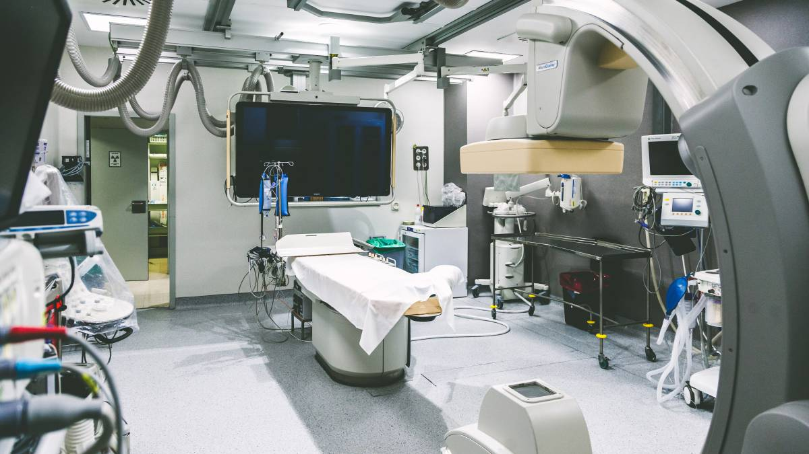
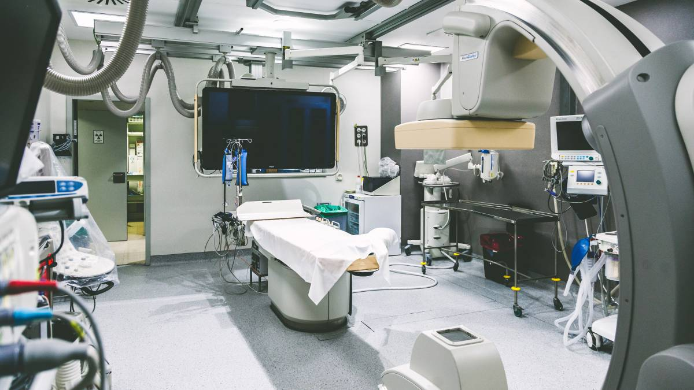
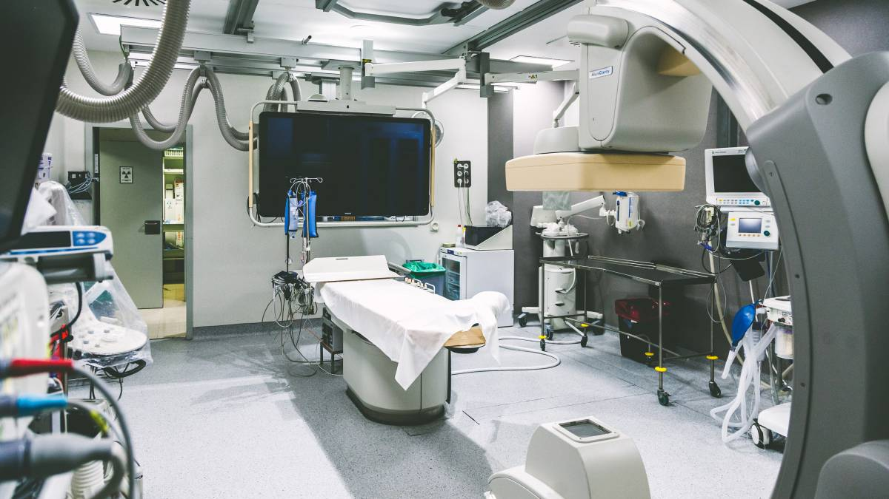
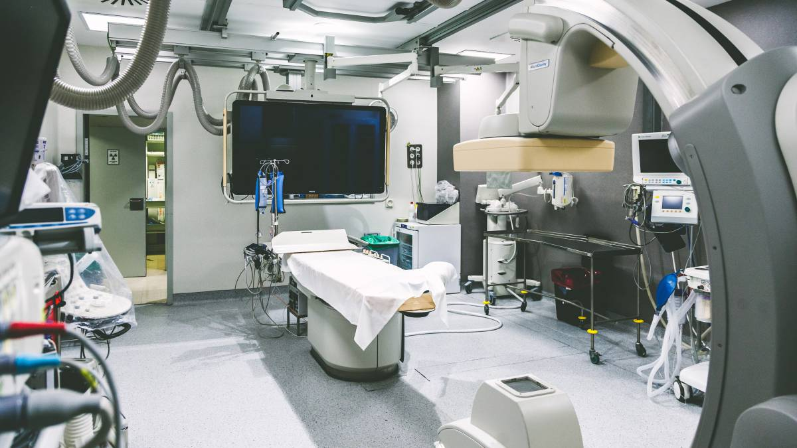

 

Múltiples factores confluyen en este hábito peligroso y que puede tener consecuencias negativas. Cada vez son más las personas que recurren, por sus propios medios, a la toma de un medicamento con el objetivo de tratar un dolor o contrarrestar una molestia.

La leche materna proporciona los nutrientes necesarios para el bebé, pero cuando decimos “Fundamento de vida” nos referimos a que ayuda a desarrollar la inteligencia y las capacidades de lenguaje, de conocimiento, además de protegerlo de enfermedades infecciosas y crónicas.
El equipo de Neumonología de la clínica Universitaria responde las preguntas más frecuentes a su especialidad respecto del Covid-19. Además, brindan consejos y medidas de prevención para implementar en nuestro día a día.